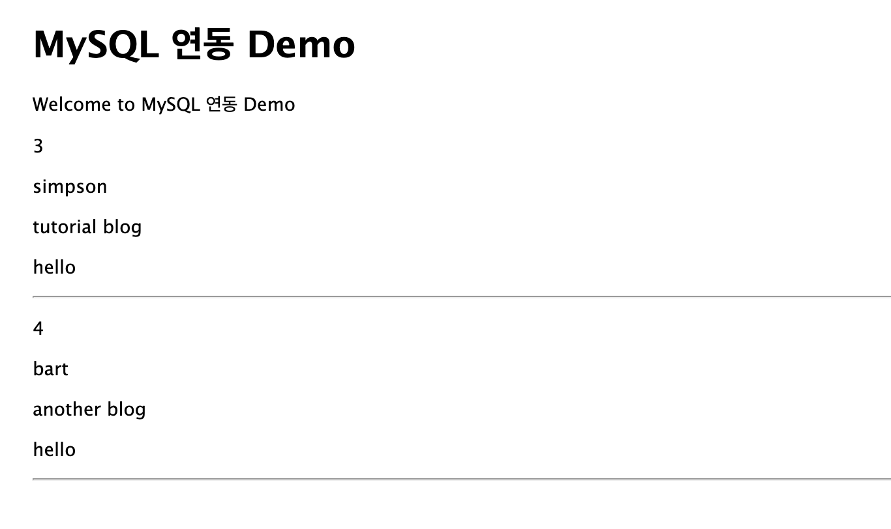

Node.js와 MySQL 연동해서 게시글 작성하기
MySQL 연동 방법
Node.js 에서 MySQL을 사용하기 위해서는 Sequelize 를 사용할 수도 있지만
이번 포스팅에서는 raw query문을 사용하기 위해 직접 mysql을 연동하는 과정을 실습해보도록 하겠습니다.
MySQL 데이터베이스 생성
mysql 접속
$ mysql -u root -p
database 및 table 생성
데모를 위해 tutorial 이라는 데이터베이스를 생성하도록 하겠습니다.
mysql> create database tutorial;
그리고 tutorial 데이터베이스에 게시글 정보를 담을 board 테이블을 생성합니다.
mysql> use tutorial;
mysql> create table board (
idx int unsigned not null primary key auto_increment,
creator_id varchar(100) not null,
title varchar(100) not null,
content MEDIUMTEXT not null,
passwd varchar(100) not null,
hit int unsigned not null default 0
);
이후 테스트를 위해 임의의 레코드를 2개 생성합니다.
mysql> insert into board(
creator_id, title, content, passwd, hit) values
('simpson', 'tutorial blog', 'hello', '1234', 0), ('bart', 'another blog', 'hello', '1234', 0);
값이 올바르게 입력되었는지 SELECT 문을 통해 확인해봅시다.
mysql> select * from board;
+-----+------------+---------------+---------+--------+-----+
| idx | creator_id | title | content | passwd | hit |
+-----+------------+---------------+---------+--------+-----+
| 3 | simpson | tutorial blog | hello | 1234 | 0 |
| 4 | bart | another blog | hello | 1234 | 0 |
+-----+------------+---------------+---------+--------+-----+
Node.js 설정
mysql 패키지 설치
$ npm i mysql
database.js 생성
Node.js에서 데이터베이스를 연동하기 위해 config 디렉토리를 생성한 다음, 그 안에 database.js 를 만들어 필요한 설정을 정의합니다.
init 함수를 통해 Connection 객체를 생성하고 실제 연결은 connect 함수를 통해 수행됩니다.
config/database.js
const mysql = require("mysql");
const db_config = {
host: "localhost",
port: "3306",
user: "root",
password: "비밀번호",
database: "tutorial",
};
module.exports = () => {
return {
init() {
return mysql.createConnection(db_config);
},
test_connection(con) {
con.connect((err) => {
if (err) {
console.error("mysql connection error : " + err);
} else {
console.log("mysql connected successfully!");
}
});
},
};
};
실제 쿼리는 이루어지지 않지만 서버 실행시 MySQL이 올바르게 연결 되었는지 확인하기 위해
app.js 에서 test_connection 함수를 호출하도록 하겠습니다.
app.js
// ... 중략
const db_config = require("./config/database")();
var app = express();
// database connection
const connection = db_config.init();
db_config.test_connection(connection);
실행
설정을 마쳤다면 npm start 를 통해 서버를 실행시켜봅니다.
만약 여러분이 mysql8을 사용하고 있다면 다음과 같은 원격 연결 오류를 마주칠수도 있습니다.
mysql connection error : Error: ER_NOT_SUPPORTED_AUTH_MODE: Client does not support authentication protocol requested by server; consider upgrading MySQL client
이 경우에는 터미널을 열고 mysql에 접속한 뒤 다음과 같이 mysql8 설정을 변경해줍니다.
mysql> ALTER USER 'root'@'localhost' IDENTIFIED WITH mysql_native_password BY 'your_new_password';
mysql> FLUSH PRIVILEGES;
SQL 호출
이제 라우터를 하나 생성해서 쿼리문을 통해 board 테이블의 데이터를 화면에 출력해보겠습니다. routes 디렉토리의 index.js에서 메인 화면에 출력해줄 데이터를 쿼리문을 통해 호출합니다.
routes/index.js
var express = require("express");
const db_config = require("../config/database")();
var router = express.Router();
// database connection
const connection = db_config.init();
connection.connect();
/* GET home page. */
router.get("/", function (req, res, next) {
const qry = "SELECT * FROM board";
connection.query(qry, (err, rows) => {
if (err) {
console.error("query error" + err);
res.status(500).send("Internal Server Error");
} else {
res.render("index", { title: "MySQL 연동 Demo", rows: rows });
}
});
});
module.exports = router;
connection 객체의 query 함수의 인자로 원하는 쿼리문을 지정해서 호출하면 등록된 콜백 함수를 통해 그 결과를 받아 처리할 수 있습니다.
이제 쿼리 결과를 웹 페이지에서 확인하기 위해 index.ejs를 생성합니다.
index.ejs
<!DOCTYPE html>
<html>
<head>
<title><%= title %></title>
<link rel="stylesheet" href="/stylesheets/style.css" />
</head>
<body>
<h1><%= title %></h1>
<p>Welcome to <%= title %></p>
<% for(let row of rows) { %>
<p><%= row.idx%></p>
<p><%= row.creator_id%></p>
<p><%= row.title%></p>
<p><%= row.content%></p>
<p><%= row.regdate%></p>
<hr />
<% } %>
</body>
</html>
실행 결과
이제 서버를 다시 켜고 메인 페이지로 접속하면 다음과 같은 화면을 볼 수 있습니다.
